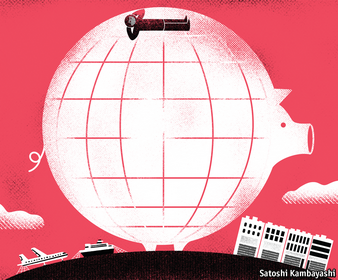
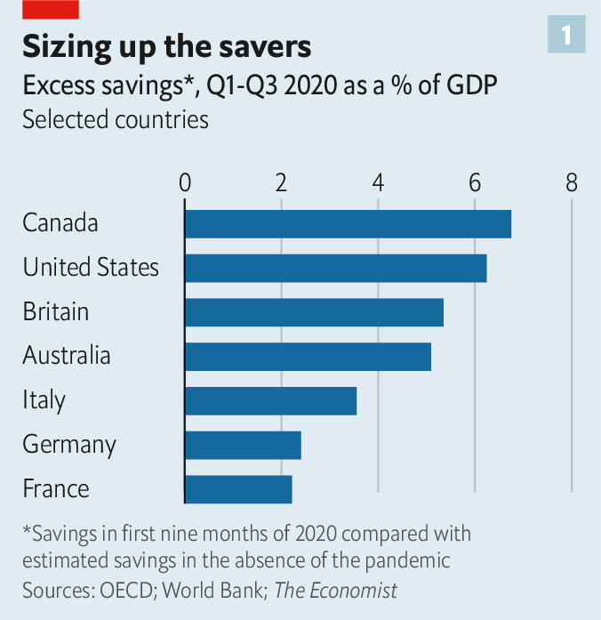
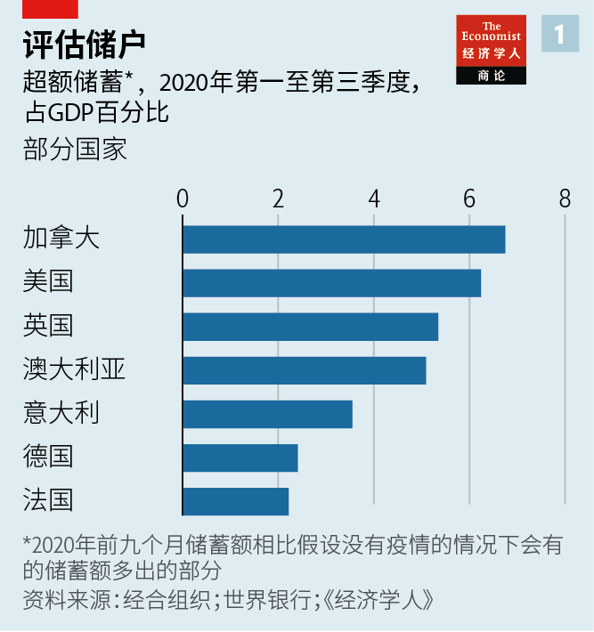
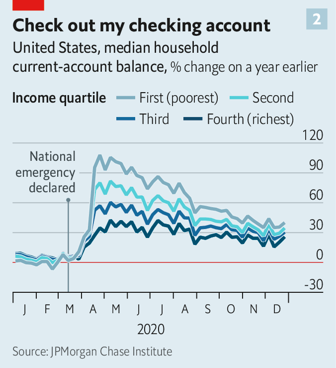
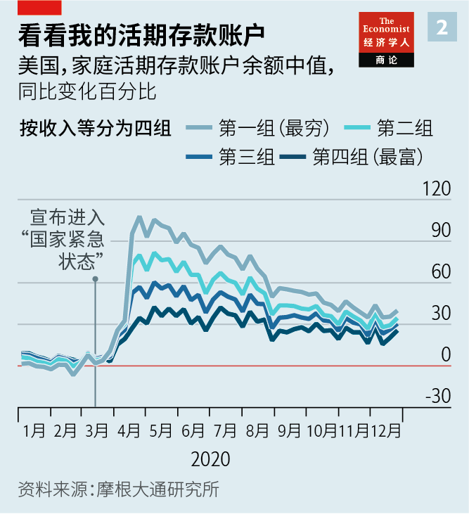

2021-03-21T13:58:23+00:00
The world economy
世界经济
世界經濟
The $3trn question
三万亿美元问题
三萬億美元問題
Consumers in the rich world, especially America, are sitting on piles of cash. How much of it will they spend?
以美国为突出代表的富裕国家的消费者攒下了一大笔钱。他们会花掉其中的多少？
以美國為突出代表的富裕國家的消費者攢下了一大筆錢。他們會花掉其中的多少？
THE ECONOMIC controls implemented during the second world war make today’s restrictions on restaurants and football stadiums look lax. In America the government rationed everything from coffee to shoes and forbade the production of fridges and bicycles. In 1943 its entire automobile industry sold only 139 cars. Two years later the war ended, and a consumer-led boom ensued. Americans put to use the personal savings they had accumulated in wartime. By 1950 carmakers were producing more than 8m vehicles a year.
比起第二次世界大战期间实施的经济管制，今天政府对餐馆和足球场的管控显得不那么严格。当时的美国政府对从咖啡到鞋子的所有商品实行限量供应，并禁止生产冰箱和自行车。1943年，美国整个汽车行业只卖了139辆车。两年后战争结束，一轮由消费拉动的经济繁荣随之而来。美国人开始花掉他们在战时攒下的钱。到1950年，汽车制造商每年生产的汽车超过800万辆。
比起第二次世界大戰期間實施的經濟管制，今天政府對餐館和足球場的管控顯得不那麼嚴格。當時的美國政府對從咖啡到鞋子的所有商品實行限量供應，並禁止生產冰箱和自行車。1943年，美國整個汽車行業只賣了139輛車。兩年後戰爭結束，一輪由消費拉動的經濟繁榮隨之而來。美國人開始花掉他們在戰時攢下的錢。到1950年，汽車製造商每年生產的汽車超過800萬輛。
Governments today are slowly easing lockdowns, as vaccines reduce hospitalisations and deaths from covid-19. Attention is turning to the likely shape of the economic recovery. The big question is whether or not the rich world can repeat the post-war trick, with pent-up savings powering a rapid bounce-back.
随着疫苗接种减少了新冠肺炎导致的住院和死亡人数，各国政府正在慢慢解除封锁。人们开始转而关注经济复苏可能的走势。一个大问题是富裕国家能否重现二战后的戏法，即人们用攒久了没处花的储蓄推动经济快速反弹。
隨着疫苗接種減少了新冠肺炎導致的住院和死亡人數，各國政府正在慢慢解除封鎖。人們開始轉而關注經濟復蘇可能的走勢。一個大問題是富裕國家能否重現二戰後的戲法，即人們用攢久了沒處花的儲蓄推動經濟快速反彈。
Households have certainly accumulated lots of cash. The Economist has gathered data on personal saving—the difference between post-tax income and consumer spending—for 21 rich countries. Had the pandemic not happened, households would probably have stashed away $3trn in the first nine months of 2020. In fact they saved $6trn. That implies “excess saving” of about $3trn—a tenth of annual consumer spending in those countries. Households in some places have built up bigger cash piles than those in others (see chart 1). In America excess savings may soon exceed 10% of GDP, in part because of President Joe Biden’s $1.9trn stimulus plan, which was due to be signed into law after The Economist went to press.
家庭毋庸置疑积累了大量现金。本刊收集了21个国家的个人储蓄（税后收入和消费支出之差）数据。假如没有发生疫情，这些国家的家庭在2020年的前九个月存下的钱可能在三万亿美元。而实际数字为六万亿美元。这意味着有大约三万亿美元的“超额储蓄”——占这些国家年消费支出的十分之一。而其中有些国家的家庭攒下的钱又多于别国（见图表1）。在美国，超额储蓄可能很快会超过GDP的10%，原因之一是拜登启动1.9万亿美元的经济刺激计划——在本刊最新一期付印后该计划预计将签署成为法律。
家庭毋庸置疑積累了大量現金。本刊收集了21個國家的個人儲蓄（稅後收入和消費支出之差）數據。假如沒有發生疫情，這些國家的家庭在2020年的前九個月存下的錢可能在三萬億美元。而實際數字為六萬億美元。這意味着有大約三萬億美元的“超額儲蓄”——占這些國家年消費支出的十分之一。而其中有些國家的家庭攢下的錢又多於別國（見圖表1）。在美國，超額儲蓄可能很快會超過GDP的10%，原因之一是拜登啟動1.9萬億美元的經濟刺激計劃——在本刊最新一期付印後該計劃預計將簽署成為法律。
Households do not usually save on such a scale during recessions. For one thing, their incomes usually fall, as their pay is cut or they lose their jobs. But governments in the rich world have spent 5% of their combined GDP on furlough schemes, unemployment benefits and stimulus cheques during the pandemic. As a result, household incomes have actually risen in the past year. At the same time, lockdowns have reduced opportunities to spend.
家庭一般不会在经济衰退期存下这么多钱。一来由于降薪或失业，他们的收入通常会下降。但新冠疫情期间，富裕国家的政府在无薪休假计划、失业救济金和经济刺激支票上投入的资金占到它们GDP总量的5%。结果在过去的一年里，家庭收入实际上有所增加。与此同时，封锁隔离减少了消费机会。
家庭一般不會在經濟衰退期存下這麼多錢。一來由於降薪或失業，他們的收入通常會下降。但新冠疫情期間，富裕國家的政府在無薪休假計劃、失業救濟金和經濟刺激支票上投入的資金佔到它們GDP總量的5%。結果在過去的一年裡，家庭收入實際上有所增加。與此同時，封鎖隔離減少了消費機會。
What will consumers do with the cash? If they were to spend it all in one go, rich-world GDP growth would probably exceed 10% in 2021, a figure so heady it would put the post-war recovery to shame. (It would probably also generate a surge in inflation.) At the other extreme, households could spend none of their savings, perhaps if they anticipated that their tax payments would eventually have to rise in order to pay for the enormous stimulus packages.
消费者会拿这些钱怎么办？如果他们把它一次性花光，2021年富裕国家的GDP增长可能会超过10%，这个振奋人心的数字足以让二战后的经济复苏相形见绌。（同时还可能导致通胀飙升。）另一种极端情况是，人们或许会预期自己最终还是得缴更多的税来为庞大的经济刺激计划买单，所以他们完全不动这笔钱。
消費者會拿這些錢怎麼辦？如果他們把它一次性花光，2021年富裕國家的GDP增長可能會超過10%，這個振奮人心的數字足以讓二戰後的經濟復蘇相形見絀。（同時還可能導致通脹飆升。）另一種極端情況是，人們或許會預期自己最終還是得繳更多的稅來為龐大的經濟刺激計劃買單，所以他們完全不動這筆錢。
The reality will be somewhere in between. Research by JPMorgan Chase, a bank, suggests that in many rich countries consumption will soon rebound to near its pre-pandemic level, powering a strong global recovery. Goldman Sachs, another bank, reckons that in America the spending of excess savings will add two percentage points to GDP growth in the year after full reopening. That points to a fairly rapid recovery in both output and employment. On March 9th the OECD, a rich-country think-tank, upgraded its forecast for GDP growth for the G20 group of countries to 6.2% in 2021, arguing that household savings represented “pent-up demand”.
现实将介乎两者之间。银行摩根大通的研究表明，在许多富裕国家，消费将很快反弹到接近新冠疫情前的水平，从而推动全球经济强劲复苏。另一家银行高盛预计，在美国，如果把超额储蓄都花出去，经济完全重启后的一年里GDP将增加两个百分点。这预示着产出和就业都会复苏得相当快。3月9日，富裕国家智库经合组织（OECD）把G20国家2021年的GDP增长预期上调至6.2%，因为它认为家庭储蓄意味着“被抑制的需求”。
現實將介乎兩者之間。銀行摩根大通的研究表明，在許多富裕國家，消費將很快反彈到接近新冠疫情前的水平，從而推動全球經濟強勁復蘇。另一家銀行高盛預計，在美國，如果把超額儲蓄都花出去，經濟完全重啟後的一年裡GDP將增加兩個百分點。這預示着產出和就業都會復蘇得相當快。3月9日，富裕國家智庫經合組織（OECD）把G20國家2021年的GDP增長預期上調至6.2%，因為它認為家庭儲蓄意味着“被抑制的需求”。
Such calculations are highly uncertain, however, and not only because there are few precedents apart from the second world war. Two factors matter: how the accumulated pots of cash are distributed across households; and whether people treat those pots as income or as wealth.
然而，这类预测有很大的不确定性，这不仅仅是因为除了二战以外几乎没有其他先例可循。有两个因素很重要：一是积累的这些钱在众多家庭的分布情况；二是人们是把这些钱看作收入还是财富。
然而，這類預測有很大的不確定性，這不僅僅是因為除了二戰以外幾乎沒有其他先例可循。有兩個因素很重要：一是積累的這些錢在眾多家庭的分布情況；二是人們是把這些錢看作收入還是財富。
Take distribution first. There seems little doubt that in all rich countries wealthier people have accumulated most of the excess savings. They have been the least likely to lose work. A big share of their spending is discretionary, say on holidays or meals out; and it is many of these services that have been shut down during the pandemic. A large chunk of savings in the hands of the rich limits the potential for a post-lockdown spending bonanza because, the evidence suggests, they have a lower propensity to spend what they earn.
先说分配情况。似乎毫无疑问的是，在所有富裕国家，超额储蓄大部分都积聚在富人手中。他们最不可能失业。他们可以自由支配很大一部分开支，比如度假或外出就餐；而提供这些服务的很多企业在疫情期间是关闭的。大量储蓄集中在富人手中降低了封锁解除后出现消费热潮的可能性，因为有证据表明富人把新增收入花出去的倾向更低。
先說分配情況。似乎毫無疑問的是，在所有富裕國家，超額儲蓄大部分都積聚在富人手中。他們最不可能失業。他們可以自由支配很大一部分開支，比如度假或外出就餐；而提供這些服務的很多企業在疫情期間是關閉的。大量儲蓄集中在富人手中降低了封鎖解除後出現消費熱潮的可能性，因為有證據表明富人把新增收入花出去的傾向更低。
Yet the pro-rich skew in savings varies across countries. In many, low-income folk will not have any excess savings to spend, even once lockdowns end. During the pandemic the poorest quarter of European households have been half as likely to increase their savings as the richest. In Britain the worst-off fifth say they have saved less during the pandemic than before. The poorest Canadians have failed to build any nest-eggs in that time.
不过这种富人储蓄偏多的情况在各国也不尽相同。在许多国家，即使封锁结束，低收入者也没有任何超额储蓄可花。新冠疫情期间，欧洲最贫穷的四分之一家庭储蓄增加的可能性是最富有家庭的一半。在英国，最贫穷的五分之一家庭表示，自己在疫情期间存下的钱比以往更少。而在此期间，最贫穷的那部分加拿大人没有存下一分钱。
不過這種富人儲蓄偏多的情況在各國也不盡相同。在許多國家，即使封鎖結束，低收入者也沒有任何超額儲蓄可花。新冠疫情期間，歐洲最貧窮的四分之一家庭儲蓄增加的可能性是最富有家庭的一半。在英國，最貧窮的五分之一家庭表示，自己在疫情期間存下的錢比以往更少。而在此期間，最貧窮的那部分加拿大人沒有存下一分錢。
America looks different. Its fiscal stimulus has been unusually generous. A third round of cheques, for $1,400, will soon be sent to most adults. Top-ups to unemployment benefits have ensured that many people who lost work have earned more from the state than they did in their jobs. The result is that low-income Americans may have saved even more than the rich, relative to their incomes. A new study by the JPMorgan Chase Institute found that in late December the poorest Americans’ bank balances were some 40% higher than the year before, compared with about 25% higher for the richest (see chart 2). The poorest half have seen their liquid assets rise in value by 11% in the past year, nearly twice the increase for the richest 1%. Low- and moderate-income earners are more likely to spend their savings once the economy reopens, fuelling the recovery.
美国看起来与众不同。它的财政刺激措施异常慷慨。大部分成年人将领到第三轮1400美元的经济刺激支票。追加的失业救济金保证了很多失业者从政府领到的钱比之前工作时挣的还多。结果导致低收入的美国人存下的钱相对于收入来说可能比富人更多。摩根大通研究所（JPMorgan Chase Institute）的一项新调查发现，去年12月底，最穷的美国人的银行存款余额比上一年高出约40%，而最富有的美国人的这一比例约为25%（见图表2）。过去一年里，最穷的一半人口的流动资产额增加了11%，是最富有的1%人群增幅的近两倍。一旦经济重启，中低收入者更有可能把存款花出去，从而推动经济复苏。
美國看起來與眾不同。它的財政刺激措施異常慷慨。大部分成年人將領到第三輪1400美元的經濟刺激支票。追加的失業救濟金保證了很多失業者從政府領到的錢比之前工作時掙的還多。結果導致低收入的美國人存下的錢相對於收入來說可能比富人更多。摩根大通研究所（JPMorgan Chase Institute）的一項新調查發現，去年12月底，最窮的美國人的銀行存款餘額比上一年高出約40%，而最富有的美國人的這一比例約為25%（見圖表2）。過去一年裡，最窮的一半人口的流動資產額增加了11%，是最富有的1%人群增幅的近兩倍。一旦經濟重啟，中低收入者更有可能把存款花出去，從而推動經濟復蘇。
There is greater uncertainty around the second factor influencing the recovery: whether households perceive their cash piles as income or wealth. This is not merely a semantic distinction. Many studies find that households are more likely to boost spending in response to an increase in income (say, a pay rise) than they are for an increase in their wealth (say, a rise in the value of their house). Households have built up excess savings in different ways in different countries. Those in Britain and the euro zone have done so by spending less. People are unlikely to treat this as “additional income”, argued Gertjan Vlieghe, a member of the Bank of England’s monetary policy committee, in a recent speech. In America and Japan, by contrast, excess savings are a result of higher income because of stimulus payouts, not spending cutbacks. In that situation, Mr Vlieghe said, excess saving “can more reasonably be interpreted as ‘additional income’”, which consumers may be happier to spend.
影响经济复苏的第二个因素的不确定性更大，即家庭是将这些现金视为收入还是财富。这不仅仅是语义上的区别。许多研究发现，家庭更有可能因为收入增加（如工资上涨）而非财富增加（如房屋升值）加大开销。各国家庭积累超额储蓄的方式各不相同。英国和欧元区的家庭是通过减少开销。人们不太可能将这样来的钱看作“额外收入”，英国央行货币政策委员会委员哥特扬·弗利葛（Gertjan Vlieghe）在最近的一次演讲中表示。相比之下，美国和日本的超额储蓄是刺激计划派钱增加了收入的结果，而不是通过削减开销积累的。在这种情况下，弗利葛表示，超额储蓄“可以被更合理地理解为‘额外收入’”，消费者可能更愿意把它们花掉。
影響經濟復蘇的第二個因素的不確定性更大，即家庭是將這些現金視為收入還是財富。這不僅僅是語義上的區別。許多研究發現，家庭更有可能因為收入增加（如工資上漲）而非財富增加（如房屋升值）加大開銷。各國家庭積累超額儲蓄的方式各不相同。英國和歐元區的家庭是通過減少開銷。人們不太可能將這樣來的錢看作“額外收入”，英國央行貨幣政策委員會委員哥特揚·弗利葛（Gertjan Vlieghe）在最近的一次演講中表示。相比之下，美國和日本的超額儲蓄是刺激計劃派錢增加了收入的結果，而不是通過削減開銷積累的。在這種情況下，弗利葛表示，超額儲蓄“可以被更合理地理解為‘額外收入’”，消費者可能更願意把它們花掉。
And that points to a striking contrast with the post-war boom. America’s recovery was impressive enough, but Europe’s was even more so, with GDP growth running 50% faster throughout the 1950s. This time is different. As the pandemic wanes it is America, where more stimulus is in place and where consumers are likelier to spend it, that seems set to leave the rest of the rich world in its dust. ■
这就与二战后的繁荣形成了一个鲜明对比。美国当时的经济复苏足以令人赞叹，但欧洲有过之而无不及——在整个上世纪50年代它的GDP增速比美国快了50%。这一次不一样了。美国有更多刺激支票在陆续寄出，美国消费者也更有可能花掉这些钱，随着疫情的消退，这回似乎轮到美国让其他富裕国家望尘莫及了。
這就與二戰後的繁榮形成了一個鮮明對比。美國當時的經濟復蘇足以令人讚歎，但歐洲有過之而無不及——在整個上世紀50年代它的GDP增速比美國快了50%。這一次不一樣了。美國有更多刺激支票在陸續寄出，美國消費者也更有可能花掉這些錢，隨着疫情的消退，這回似乎輪到美國讓其他富裕國家望塵莫及了。